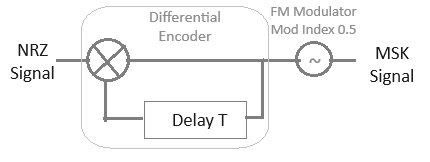

Instructions for Minimum Shift Keying Modulation (MSK)
Step 1: Click on 'Generate Message' button to generate input message signal
Step 2: Then click on 'Generate NRZ Signal' button to generate NRZ signal
Step 3: Click on 'Generate Carrier' button to generate carrier signal
Step 4: You can change the number of bits, carrier signal frequency and baud rate from the input fields
Step 5: Click on 'Generate MSK Signal' button to generate Minimum Shift Keying Signal
In MSK, the frequency shift is half the baud rate. MSK represents the "1" bit with a frequency slightly higher
than the carrier, fc + (baud rate)/4 and the "0" bit with a frequency slightly lower
than the carrier, fc - (baud rate)/4.

Instructions for Minimum Shift Keying (MSK) Demodulation
Step 1: You can Demodulate the MSK Signal clicking on the 'Demodulate MSK' button
The IF filter isolates the desired MSK signal from noise and interference. The delay circuit provides a delayed reference to detect phase transitions between successive bits.
The phase shifter adjusts the signal's phase to align it with the local reference, enabling accurate demodulation of the bitstream.